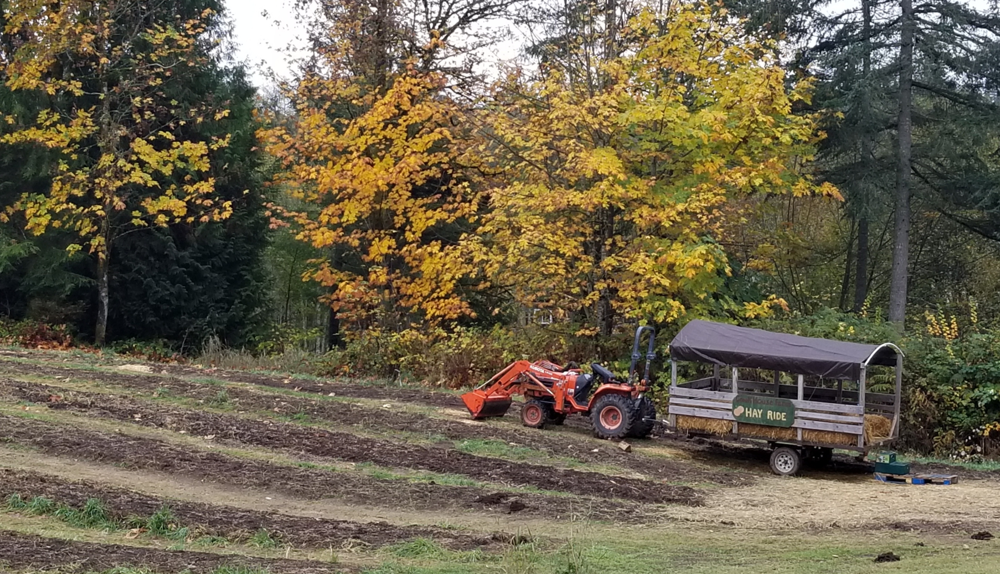
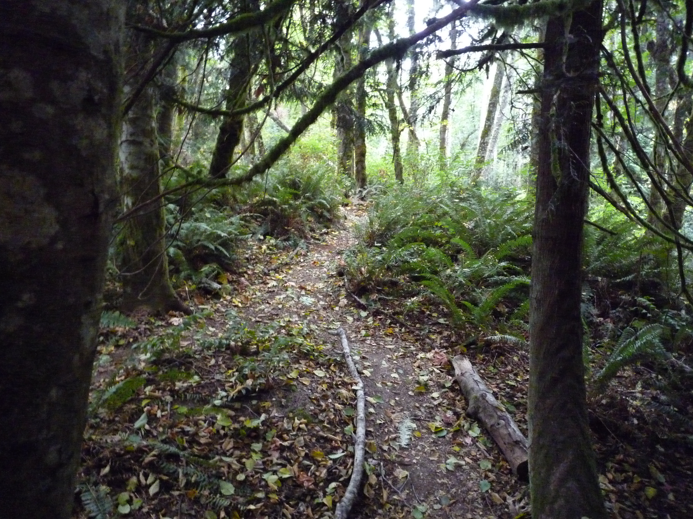

The Front Pumpkin Patch
The Hay Ride
The Nature Trail
The Pumpkin Patch
Our pumpkins are grown on rolling hills between grassy walkways, surrounded by native
shrubbery and wooded areas, bursting with fall color. The farm offers over 20 varieties
of organic, heirloom pumpkins, selected especially for the dual purposes of autumn decoration and
quality food.
While visiting our pumpkin patch, we hope your family will also enjoy various activities
located across the farm, including:
farm animals (grain can be purchased at the farmstand for 25¢ a bag),
the L'il Pumpkin Play-Patch (a hay fort, with a wooden truck and see-saw),
a hay ride,
the Pumpkin Barrel Ride (intended for children under 12 years old),
a walk along our beautiful nature trail (a hidden treasure that some consider the
favorite part of their visit!),
two slingshots (launch water balloons down the hill at big pumpkin
targets),
the autumn pallet maze,
and the super-slide (guests ride in an inner tube to stay dry 😊).
The farm also features
many opportunities to capture beautiful autumn photos.
For a more customized experience,
we invite you to explore our "personalized pumpkin"
service which adds an additional creative touch to your fall decorations, and provides a very memorable "search
through the pumpkin patch for your very own pumpkin". It also preserves the pumpkin for lasting decor,
and later use as a cooking ingredient.
Please visit our 'Group Visits' page for detailed information regarding our pumpkin patch services for 2021.